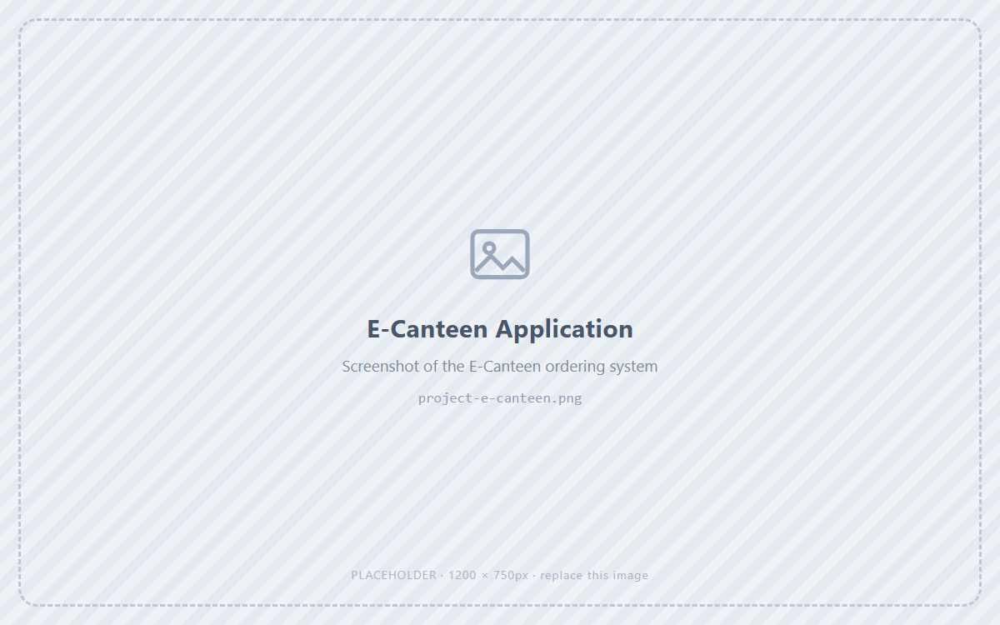

Make employee meal service a manageable workflow
E-Canteen connects meal planning with the point where meals are served. The locally maintained application supports department and shift schedules, meal templates, extra-meal requirements, RFID attendance, and reporting.
It sits within my broader experience building employee-catering applications, including ordering, quotas, and subsidy workflows at my previous company. This case study focuses on the scheduling and attendance implementation available in the maintained application.
Plan the requirement and account for the service
Canteen operations combine recurring patterns with daily exceptions. A weekly schedule needs department and shift context, extra meals need a recorded reason and quantity, and the service point needs to identify the employee taking a meal.
A meal plan alone cannot explain consumption. Keeping planning and attendance as separate records makes it possible to review the service without treating expected demand as an actual meal event.
Key features
- Weekly schedules and meal templates
Administrative screens manage department/shift requirements and dated schedules. Reusable templates support recurring meal planning.
- Extra-meal planning and automation
Extra meals can be maintained separately from the ordinary schedule. A scheduled job generates entries from a default template and checks for existing entries before creating them.
- RFID meal attendance
The canteen workflow resolves the employee from an RFID tap and records meal attendance and the access outcome. Additional meal attendees are supported for visitor-related needs.
- Operational reporting
Aggregated meal reports, department weekly views, statistics, filters, and Excel exports connect the planning and attendance records.
- Employee and organizational context
Employee, department, and shift information provide a consistent context for both administrative planning and service-point activity.
From weekly planning to daily service
A scheduled meal and a recorded meal attendance are different facts. Reporting connects them without assuming every planned meal was consumed.
Administrators maintain the recurring requirement, generate the schedule, and account for extra meals. At service time, the attendance workflow records the employee meal event. Reporting then provides a way to inspect the resulting activity by period, department, and shift.
My contribution
I developed employee meal-management workflows across frontend, backend, scheduling, and reporting. In the maintained implementation, this includes weekly schedules, extra-meal automation, and the connection between employee identity and canteen attendance.
The engineering work keeps recurring generation and service events distinct. For automation, existing entries are checked before generation; for reporting, scheduled quantities remain distinguishable from actual attendance.
A web application connected to the canteen service point
The maintained application uses an Angular/TypeScript frontend, Express services on Bun, and PostgreSQL accessed through Prisma and Knex. Employee data and RFID references connect the administrative workflow to meal attendance.
The diagram shows the logical relationship between planning, service, and reporting, rather than a physical deployment topology.
Outcomes & lessons
The application gives administrators and canteen operations a shared view of meal requirements and recorded service activity. Reusable templates support the recurring work, while extra-meal records and attendance retain the exceptions and actual events.
The main lesson is to distinguish a plan, an entitlement rule, and a consumption record. They describe related parts of the service, but each needs its own meaning for the resulting reports to be useful.